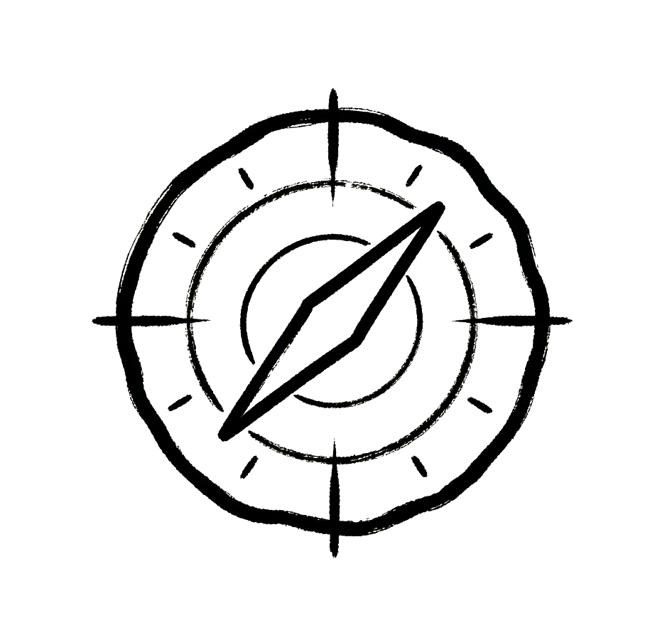
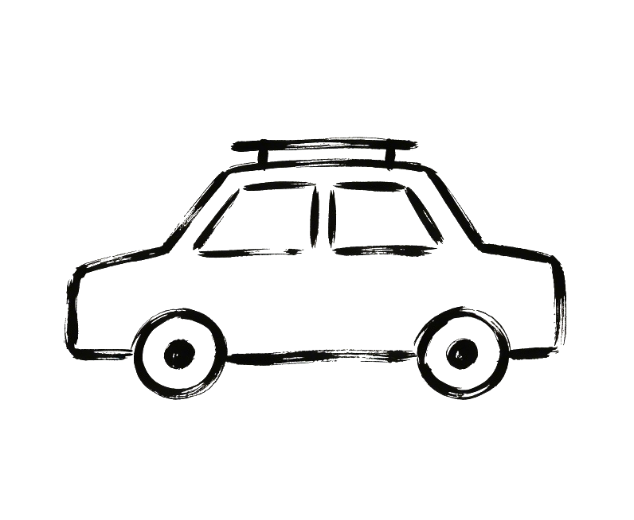
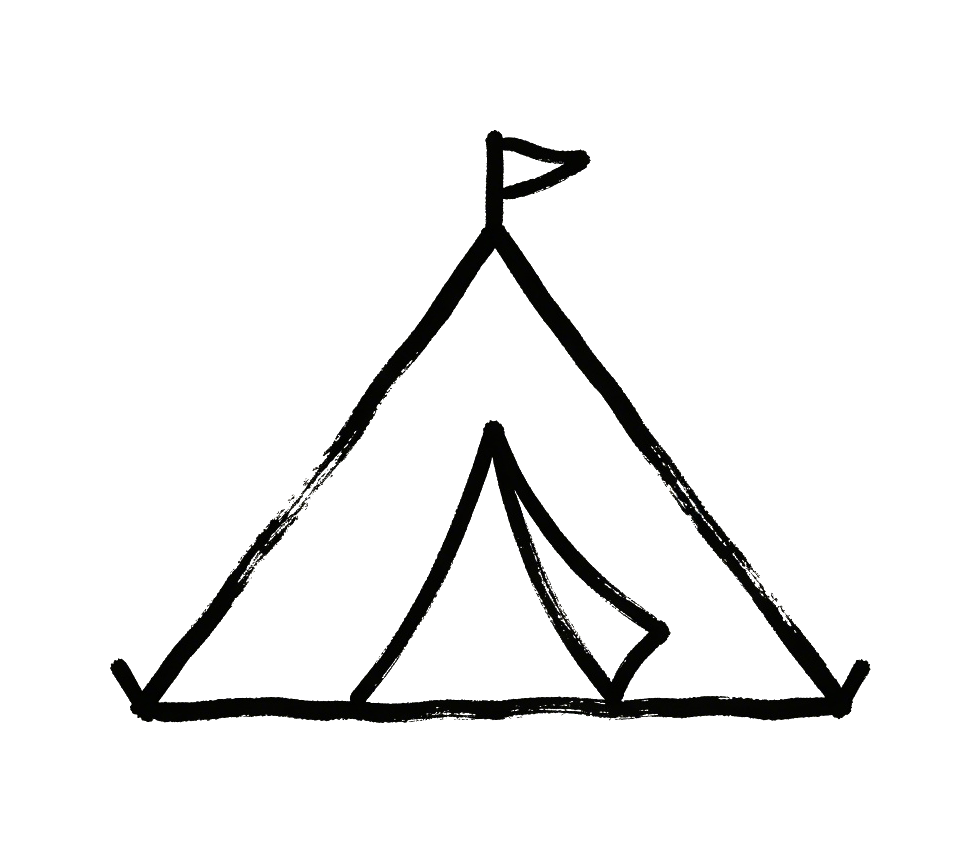
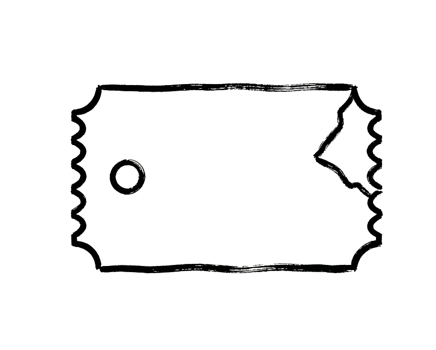
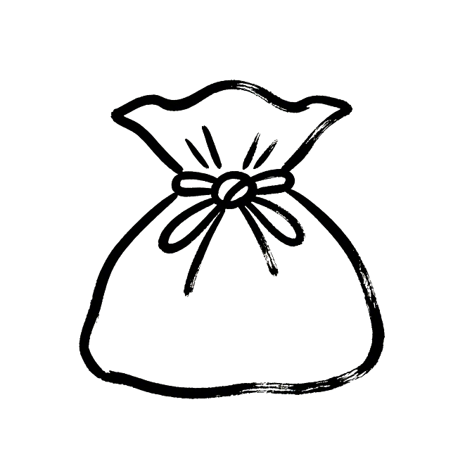

一笔载岁 静记流年
贰零贰陆·壹十月·卷一
账簿
往事可稽 来路有迹
贰零贰陆·壹十月·卷一
辞却前尘 重启征程
账户为空 快来记一笔吧
合计
¥ 0
游笺
占位空壳 · 内容留后续 Sprint
载录
初启其端 落笔由你
贰零贰陆·壹十月·卷一
金额
¥128.00
分类
餐饮

交通

自驾

住宿

门票

其他
时间
地点
备注
阅踪
罗陈途记 遍览游踪
贰零贰陆·壹十月·卷一
起始日期
结束日期
地点
此间无踪
择定时日，再寻踪迹
合计
¥ 0
确认这笔账
🏷️ 类别 📅 日期只能选今天及之前
清空这个账户的全部账单？
最后确认：清空后无法恢复！
✅ 保存成功